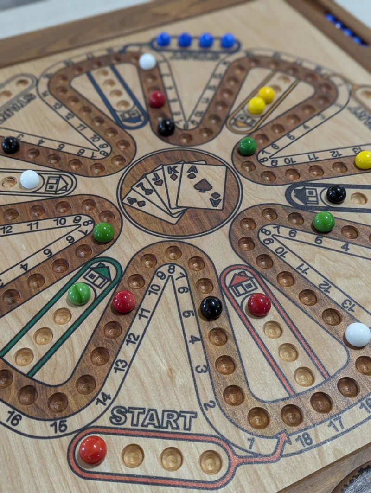

01
01GLASS & ART
Colour, caught in glass
Rebecca Grindon · The Glass House
Follow your curiosity. Find your next favourite thing. Spend a weekend with the makers who bring a little more colour to the world.
Explore the festival ↗NOT YOUR EVERYDAY SHOPPING TRIP
From a piece that catches your eye to a conversation that stays with you, there’s something special about finding it in person. Come for the crafts. Stay for the food, live entertainment and community.
Discover the exhibitors ↗01GLASS & ART
Rebecca Grindon · The Glass House

02WOOD & PLAY
Michaud Toys
 03
03JEWELLERY & DESIGN
Brilliant Elements
SAVE THE WEEKEND
Bring a friend, make a day of it, and leave a little room for the unexpected.
Add to calendar ↓A free shuttle runs every 15 minutes from 10 am, from the Schubert Centre via the Recreation Centre to Kal Tire Place. Service ends one hour before the festival closes each day.
Admission is free. If you can, bring a non-perishable food item or a donation for the local food bank.
CALLING ALL MAKERS
Original work. Thoughtful details. Things made by you. Discover the application process and join a community that celebrates handmade.
Exhibitor information ↗2027 applications are not yet open. Check the official application page for updates.
No ticket is needed: admission is free. Food bank donations are welcome.
Find Creative Chaos at Kal Tire Place, 3445 43rd Avenue, Vernon, BC. The festival uses both the North and South buildings.
Visit the official application page for current details. Work must be handmade by the exhibitor. The posted application process is by mail; check the latest package before applying.